WHU is a well-established umbrella manufacturer based in Hangzhou, China, founded in 1996. With over two decades of experience in the industry, the company has become a trusted name for producing high-quality umbrellas. WHU specializes in a wide range of umbrella types, including classic, compact, golf, and fashion umbrellas, catering to both domestic and international markets. Known for their commitment to innovation and craftsmanship, WHU combines traditional manufacturing techniques with modern technology to deliver durable and stylish products. The company continues to grow, maintaining a reputation for excellence in both design and functionality.
Types of Umbrellas We Make
Umbrellas have been a staple accessory for centuries, serving as protection from both rain and the sun. Over time, they have evolved in design, size, and functionality, catering to different needs and preferences. Whether you’re using an umbrella to shield yourself from a downpour, shade yourself at the beach, or add elegance to a wedding, there’s an umbrella for every occasion. Here is a comprehensive guide to the various types of umbrellas that we manufacture.
1.Classic or Traditional Umbrella
The classic or traditional umbrella is the most commonly recognized style. It typically features a long, straight shaft and a curved handle, often made of wood or metal. The canopy is large enough to provide ample coverage during rain, and the fabric is usually made of water-resistant materials like polyester or nylon.

- Area of Use:These umbrellas are ideal for everyday use, whether walking in the rain or using them as a sun shield.
- Advantages:They offer good coverage, are durable, and often come with both manual and automatic options. The traditional curved handle provides a comfortable grip and a stylish appearance.
- Disadvantages:The length of the umbrella makes it less portable compared to compact options.
2. Compact Umbrella
Compact umbrellas are designed with portability in mind. They are foldable, often collapsing into multiple sections, allowing them to fit easily into bags, backpacks, or even large purses. Compact umbrellas usually feature a smaller canopy, so while they provide adequate rain protection, they may not be as sturdy in heavy wind or torrential downpours.
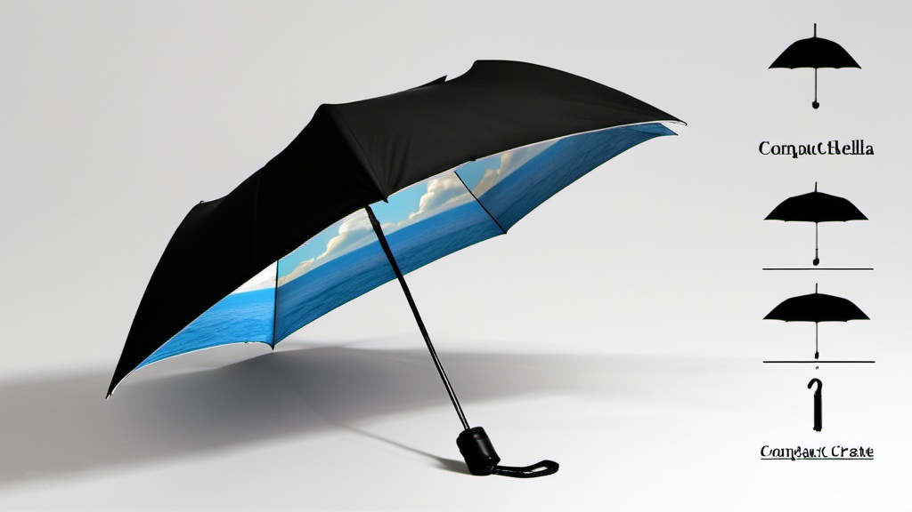- Area of Use:Perfect for travel, commuting, or those who need an umbrella they can carry around without bulk.
- Advantages:Lightweight and portable, they can be easily stored and carried for unexpected rain showers. Many come with automatic open and close features.
- Disadvantages:The smaller canopy may not offer full coverage in extreme weather, and the folding mechanism can be prone to damage over time.
3. Golf Umbrella
Golf umbrellas are large and designed to offer maximum protection from the elements, especially on the golf course. They can have diameters ranging from 60 to 70 inches or more, providing enough space to cover the golfer, their equipment, and even a caddy. These umbrellas are built to withstand wind, rain, and even sun exposure, with materials like fiberglass often used to create strong but lightweight frames.
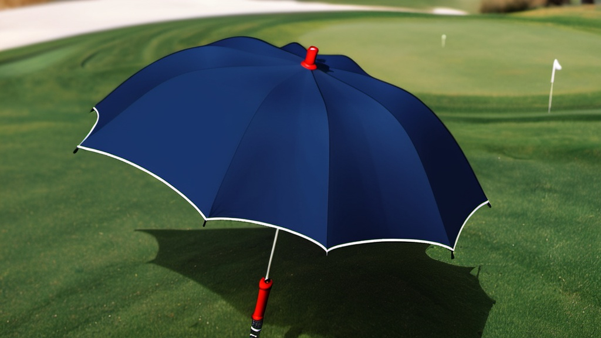- Area of Use:Primarily used on golf courses, but also great for outdoor events or situations where multiple people need coverage.
- Advantages:Large canopy provides excellent coverage. These umbrellas are sturdy and often wind-resistant.
- Disadvantages:Due to their size, they are less portable and can be cumbersome to carry around in everyday settings.
4. Bubble Umbrella
Bubble umbrellas are distinct for their dome-shaped canopy, often made from transparent plastic or vinyl. The dome shape curves downward, providing better coverage than standard umbrellas by enclosing the user and protecting them from wind and rain at multiple angles. The transparent material allows for clear visibility while walking.
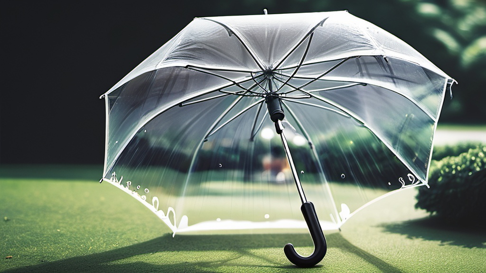- Area of Use:Ideal for urban environments or windy, rainy conditions where extra coverage is needed.
- Advantages:The dome shape offers superior protection from wind and rain, and the clear material allows for good visibility in crowded or busy areas.
- Disadvantages:The unique shape makes them less compact for storage, and the plastic canopy is prone to fogging or scratching over time.
5. Automatic Umbrella
Automatic umbrellas are designed for convenience, with mechanisms that allow users to open and close the umbrella with the press of a button. These umbrellas are available in a variety of sizes, including both compact and full-sized options. The automatic feature makes them quick and easy to use, especially when you’re caught in unexpected weather.
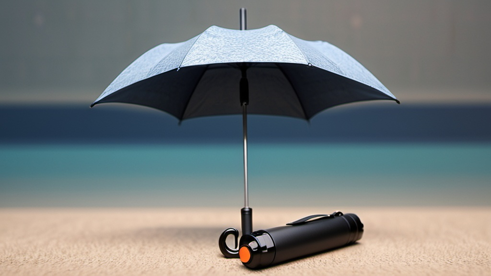- Area of Use:Ideal for commuters or people on the go who need to quickly deploy or store their umbrella.
- Advantages:Easy to open and close with one hand, making them practical in unexpected weather or when entering and exiting vehicles.
- Disadvantages:Automatic mechanisms can wear out over time, and these umbrellas may not be as durable as manual ones.
6. Beach Umbrella
Beach umbrellas are large, colorful umbrellas designed to provide shade on the beach. They often come with a sturdy pole that can be anchored into the sand and offer UV protection. These umbrellas are typically made from materials that can resist sun damage and wind.
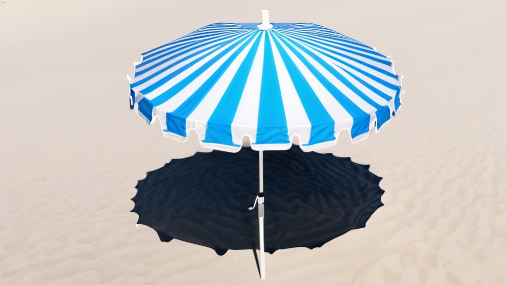- Area of Use:Ideal for beach-goers, picnics, or outdoor activities where sun protection is needed.
- Advantages:The large canopy provides excellent sun protection, and many beach umbrellas come with UV-blocking features. They are designed to be resistant to wind and elements.
- Disadvantages:They are bulky and may require some effort to transport and set up.
7. Patio Umbrella
Patio umbrellas are freestanding and often used for outdoor dining areas, gardens, or cafés. They are designed to provide shade over tables or seating areas, and they usually come with a weighted base to keep them stable. Many patio umbrellas feature a crank system that makes them easy to open and close.
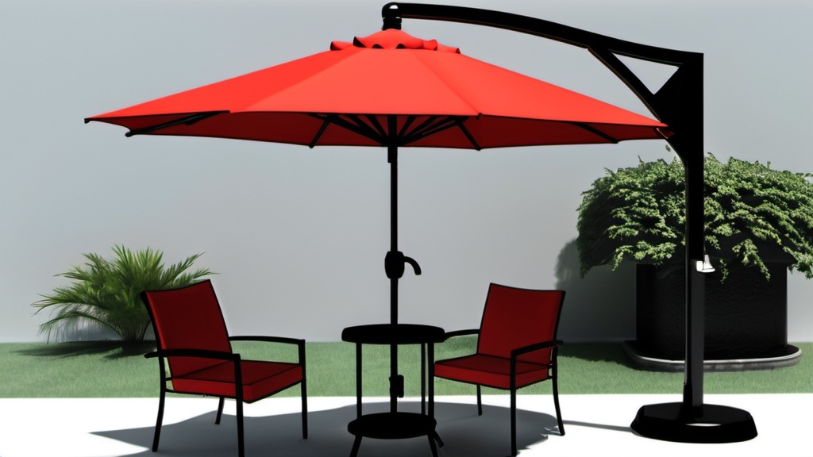- Area of Use:Perfect for backyards, patios, or commercial outdoor seating areas.
- Advantages:Large canopies provide extensive shade, and many models are adjustable or tiltable to block the sun from different angles.
- Disadvantages:These umbrellas are heavy and stationary, making them unsuitable for portable use.
8. Wedding Umbrella
Wedding umbrellas are decorative and elegant, often used as accessories in weddings for either the bride and groom or guests. These umbrellas are typically white, lace-covered, or intricately designed and serve more as a style element than for functional weather protection.
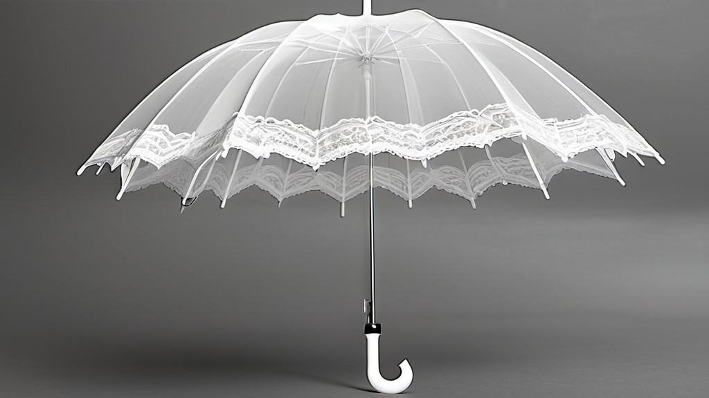- Area of Use:Best suited for weddings, outdoor events, or photo shoots.
- Advantages:Stylish and beautiful, adding a touch of elegance to weddings or events.
- Disadvantages:Not as functional in heavy rain or wind, as these are designed more for aesthetics than durability.
9. Fashion Umbrella
Fashion umbrellas are designed with aesthetics in mind, often featuring unique prints, vibrant colors, or interesting shapes. These umbrellas may come in a variety of sizes and styles but are generally used to make a statement while providing moderate protection from the weather.
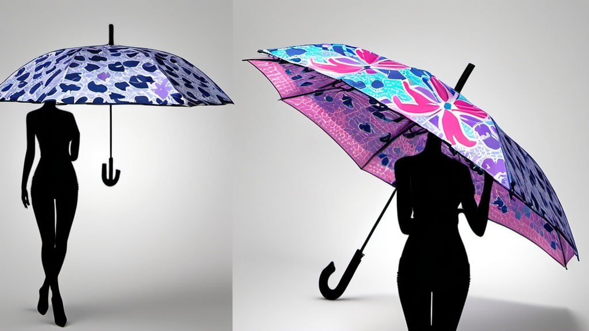- Area of Use:Ideal for those who want their umbrella to reflect their personal style or for special occasions.
- Advantages:These umbrellas are trendy and fashionable, adding a fun element to an otherwise practical item.
- Disadvantages:Fashion umbrellas are often less durable and may not perform well in extreme weather.
10. Travel Umbrella
Travel umbrellas are specifically designed for portability and convenience. They are extremely lightweight, compact, and often come with a protective cover, making them easy to pack in a suitcase or travel bag. While they are great for travel, they may not provide as much durability or coverage as larger models.
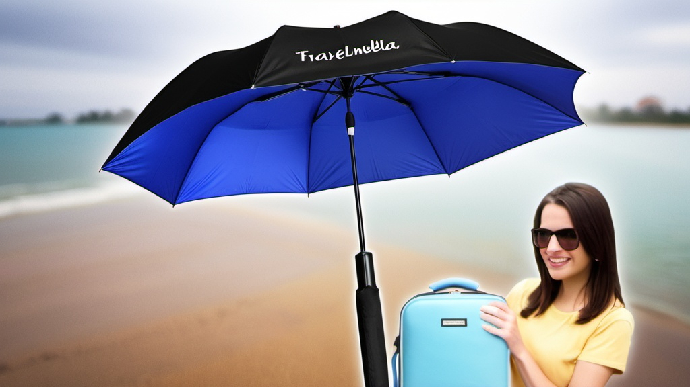- Area of Use:Perfect for travel, hiking, or anyone who needs a small umbrella that can easily fit into a bag.
- Advantages:Lightweight, compact, and easy to carry. Many models are designed to withstand moderate rain and wind.
- Disadvantages:Smaller size means less coverage and lower durability in extreme conditions.
11. Inverted or Reverse Umbrella
Inverted umbrellas fold upwards, trapping the wet side of the umbrella inside when closed. This design prevents water from dripping on the floor or in cars, making them practical for commuting or use in confined spaces. The unique folding mechanism also allows for easy entry and exit from cars or doorways without getting wet.
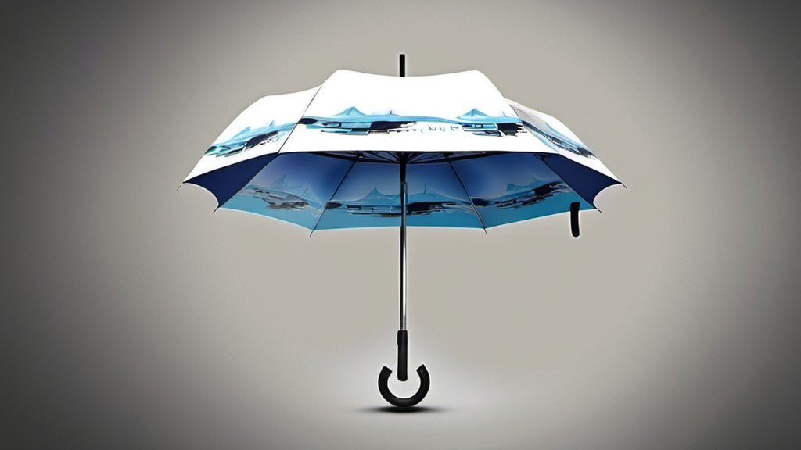- Area of Use:Great for urban environments or for people who frequently use cars or public transportation.
- Advantages:Prevents water from dripping when folded, and its unique design makes it convenient for entering buildings or vehicles.
- Disadvantages:The reverse folding design may take some getting used to, and they are often bulkier than traditional umbrellas.
12. Parasols
Parasols are specifically designed to protect users from the sun rather than rain. They are typically more lightweight and decorative, made with fabrics that block UV rays. Historically, parasols have been used as fashion accessories, often with intricate designs or lace patterns.
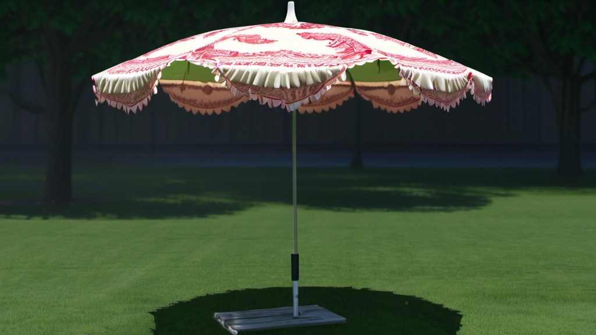- Area of Use:Perfect for sunny days, outdoor events, or photo shoots where sun protection and style are needed.
- Advantages:Offers stylish sun protection, and many parasols are beautifully designed for aesthetic purposes.
- Disadvantages:Not suitable for rain, as they are often not made from water-resistant materials.
CONTACT US
- Email Address: contact@whuumbrellas.com
- Phone Number: (0086)15857133819
- WeChat: (0086)15857133819
- Street Address: 67 Hezhuang Street, Dajiangdong Industrial Agglomeration Zone, Hangzhou City, Zhejiang Province, China
LANGUAGES